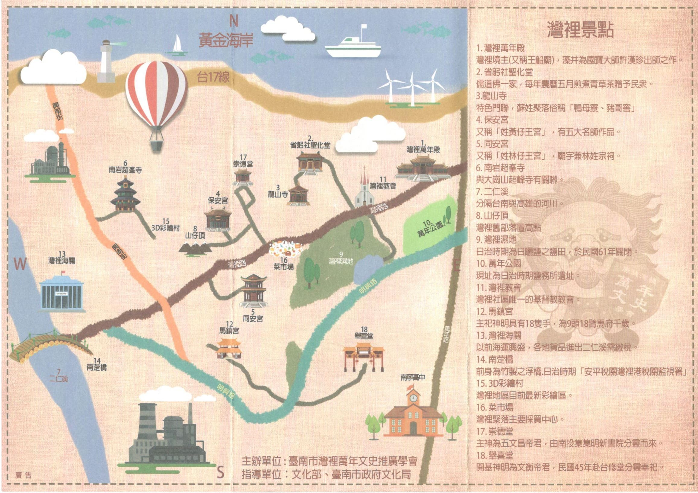
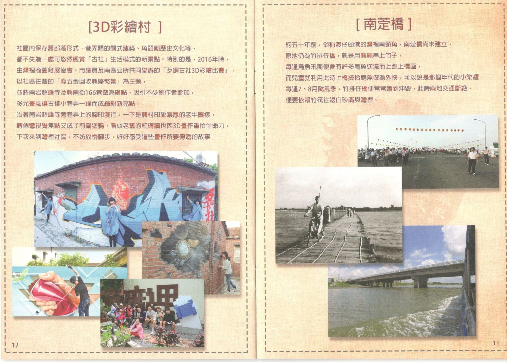
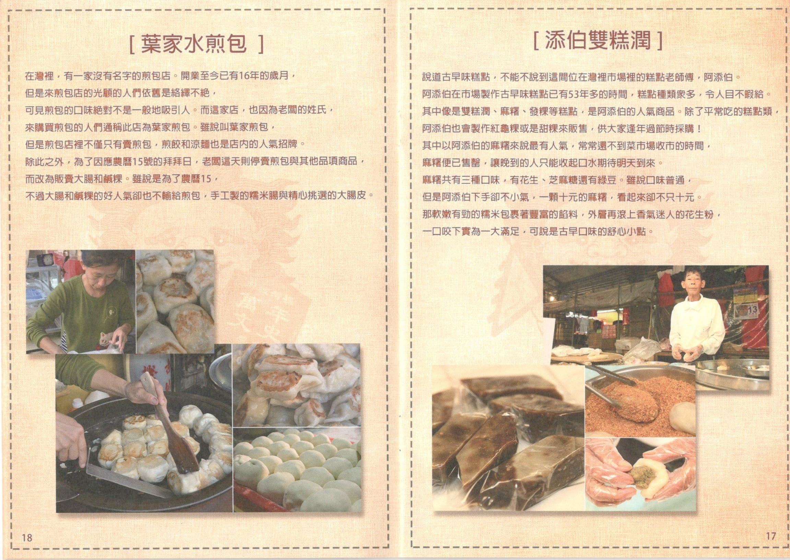
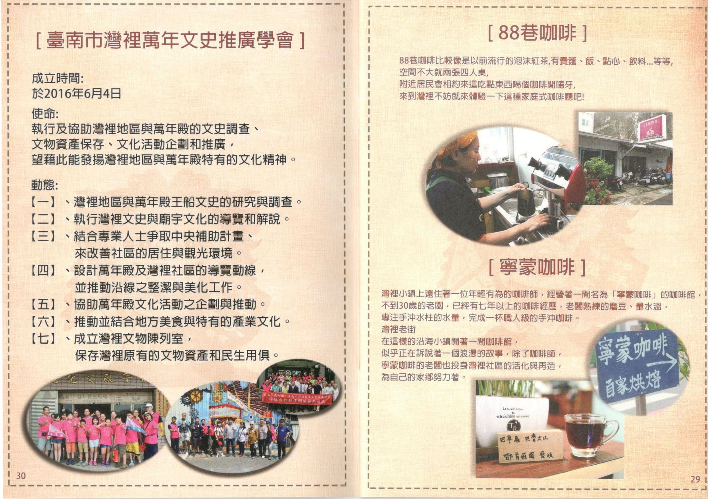

<ion-header>
  <ion-toolbar style="background: 0cea89;">
    <ion-buttons slot="end">
      <ion-menu-button></ion-menu-button>
    </ion-buttons>
    <ion-title>
      導覽手冊
    </ion-title>
  </ion-toolbar>
</ion-header>

<ion-content>
  <div class="adimg">
    <ion-slides [options]="slideOpts">
      <ion-slide *ngFor="let item of slidesItems">
        
      </ion-slide>
    </ion-slides>


  </div>
  <ion-card>

    <ion-card-header>
      <ion-card-subtitle>彎來彎去ㄙㄝˇ(逛)灣裡</ion-card-subtitle>
      <ion-card-title>操作介紹</ion-card-title>
    </ion-card-header>

    <ul style="padding-right: 16px;">
      <li>(手機)導覽手冊可透過雙指拉大放大檢視，可以左右滑動。</li>
      <li>下方地圖左上角 "鯤鯓觀光"左邊的圖片按下去，選擇想去的地點，根據自己想去的地點規畫行程。</li>
      <li>下方地圖右上角可以前往Gmap，方便觀看</li>
      
    </ul>

  </ion-card>
  <h3 style="text-align: center;height: 100%;">
    <iframe src="https://www.google.com/maps/d/u/0/embed?mid=11_GWrfNh9aC1fkhbjJ7DxafAcdxIEfb4" width="80%"
      height="80%"></iframe>
  </h3>

  <!--
  

  

  

  

  

  

  

  

  

  

  

  

  

  

  

  

  

   -->
  <ion-footer>
    <hr>
    <h5>
      Copyright 2019 | All Rights Reserved. Designed by 4a5g0082@STUST.edu.tw.
    </h5>
  </ion-footer>

</ion-content>